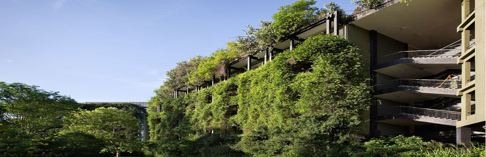

Heritance Kandalama

Heritance Kandalama Hotel is currently offering special flexible terms and conditions to help you book Sri Lanka with confidence despite the uncertainty surrounding global travel at the moment. Read our blog or contact one of our expert trip planners to find out how you can take advantage of this special policy.
Conceptualized by Geoffrey Bawa, world renowned architect, the Heritance Kandalama, described by one as a giant belvedere, is not a building to look at, but rather a building to look from.
Built in a minimalist and contemporary style, the hotel sits on a rocky outcrop on the edge of an ancient reservoir and enjoys sweeping views of the surrounding countryside including two UNESCO World Heritage Sites: the 1st Century BC Dambulla rock temple and the 5th Century AD Sigiriya Rock Temple. The hotel itself is surrounded by beautiful naturally landscaped gardens, and is a haven for over 160 species of migratory birds.
The Heritance Kandalama has 152 rooms divided into 8 categories along with 15 suites located in the Sigiriya and Dambulla wings.
Facilities
| WIFI |
Air Condition |
GYM |
Pool |
Room Service |
| Yes |
Yes |
Yes |
Yes |
Yes |
Location
Contact
| Phone |
E-Mail |
Website |
Address |
| +94 66 5555 000 |
hkinfo@heritancehotels.com |
www.heritancehotels.com/kandalama |
Heritance Kandalama PO Box 11, Dambulla,
Sri Lanka. |